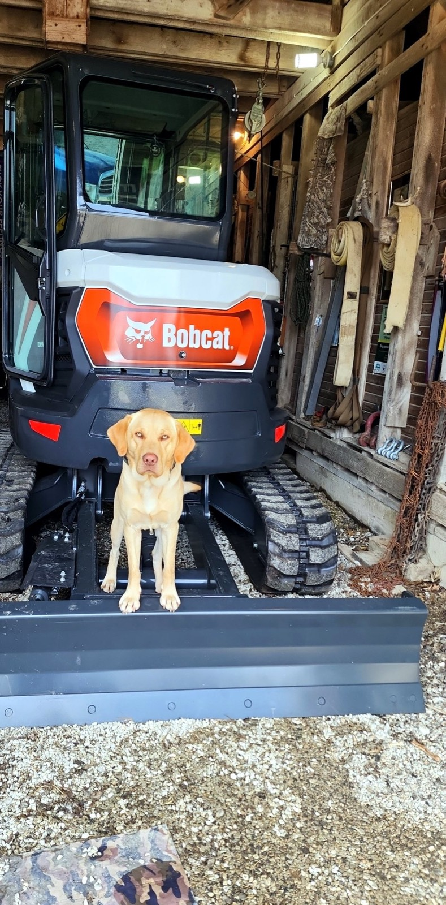

Effingham County
Effingham, Teutopolis, Altamont, Dieterich, Beecher City, and the farm ground around them.
About
Lil Yellow Dog Diggin focuses on practical land work for property owners across south-central and eastern Illinois who need useful results, clear communication, and the right equipment for the job.
Property owners call when they need overgrowth cleared, a driveway improved, a fence row opened up, or a small dirt-work project completed without turning it into a major production.
The work is a good fit for rural homes, small farms, acreage, pond edges, field entrances, trails, and recreational property that needs cleanup or access improvements.

Meet the operator
With more than 30 years of experience operating heavy equipment across multiple states, the operator behind Lil Yellow Dog Diggin’ brings decades of hands-on knowledge to every project. Experienced with dozers, excavators, backhoes, dump trucks, and skid steers, they have worked on a wide variety of residential, agricultural, and commercial jobs.
Today, Lil Yellow Dog Diggin’ specializes in smaller projects that require the right equipment and attention to detail. Services include driveway installation and repair, brush and fence row clearing, rock placement, pond bank cleanup, drainage improvements, and other property enhancement projects. Every job is approached with a commitment to quality workmanship, reliability, and treating each property with the same care as if it were their own.
Whether you need to improve access to your property, reclaim overgrown areas, or solve drainage issues, Lil Yellow Dog Diggin’ has the experience and equipment to get the job done right.
Archie hasn’t logged any of those 30 years on the controls, but he supervises every job from the cab — quality control, morale, and a thorough sniff inspection before we call it done.

Service area
Work runs out of home base across the following counties. If you are near the edge of one of them, call anyway — it is usually still worth a look.
Effingham, Teutopolis, Altamont, Dieterich, Beecher City, and the farm ground around them.
Flora, Louisville, Clay City, Xenia, and the surrounding acreage.
Olney, Noble, Parkersburg, and nearby rural property.
Newton, Ste. Marie, Willow Hill, and the ground in between.
Robinson, Palestine, Oblong, Hutsonville, and the surrounding farmland.
Charleston, Mattoon, Oakland, Ashmore, and the acreage around them.
Vandalia, St. Elmo, Ramsey, Brownstown, and nearby rural property.
Contact
Estimates are always free. Call or text with the property location, a short description of the work, and any photos that help show the area and the condition of the ground.
Call: (618) 731-1082
Text: (217) 821-0114
Estimates: Always free — contact us to get started
Availability: Weekends and evenings welcome — flexible scheduling, and we show up when we say we will
Service area: Clay, Richland, Effingham, Jasper, Crawford, Coles, and Fayette Counties in Illinois